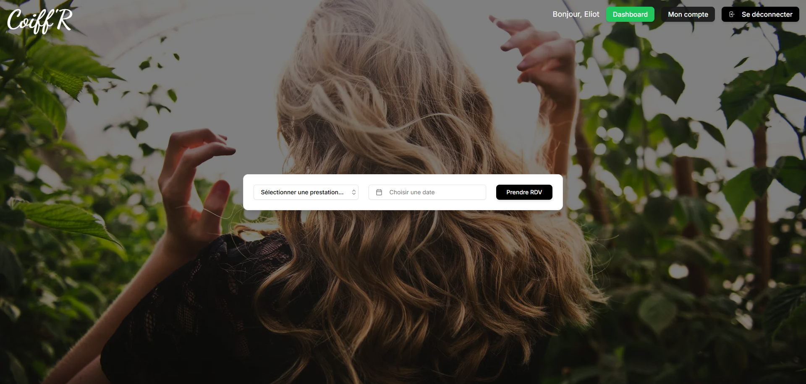

Coiff'R
Coiff'R est une application interne conçue pour la gestion des rendez-vous dans un salon de coiffure. Elle permet aux employés de gérer efficacement les réservations, les clients et les horaires.
Technologies utilisées :
- Next.js
- Tailwind CSS
- Shadcn
- NextAuth.js
Fonctionnalités principales :
- Gestion des rendez-vous
- Suivi des clients
- Interface utilisateur intuitive
Aperçu de l'interface :
